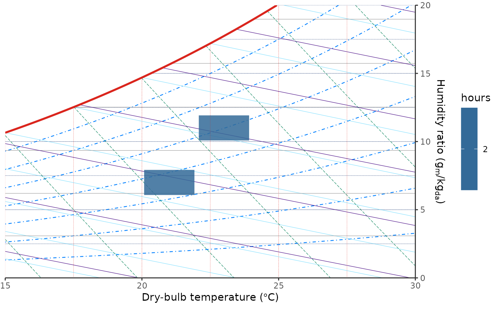
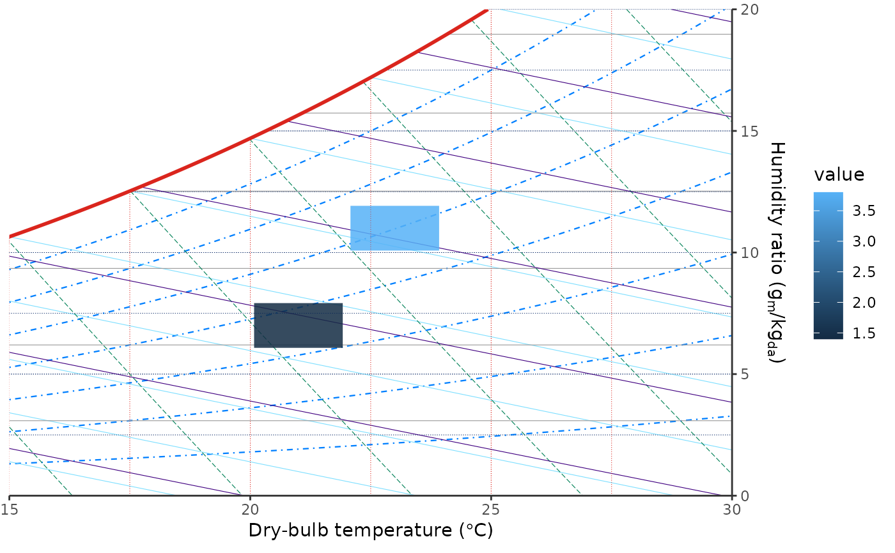

stat_psychro_bin() bins observations on dry-bulb temperature and humidity
ratio coordinates. geom_psychro_tile() draws the result as tiles, which is
useful for weather-hour distributions and gridded simulation summaries.
Usage
stat_psychro_bin(
mapping = NULL,
data = NULL,
geom = "tile",
position = "identity",
...,
bins = 30,
binwidth = NULL,
boundary = c(0, 0),
drop = TRUE,
fun = "sum",
gap = 0.08,
na.rm = FALSE,
show.legend = NA,
inherit.aes = TRUE
)
geom_psychro_tile(
mapping = NULL,
data = NULL,
stat = "psychro_bin",
position = "identity",
...,
gap = 0.08,
boundary = c(0, 0),
cell.grid = TRUE,
cell.grid.colour = ggplot2::waiver(),
cell.grid.linewidth = ggplot2::waiver(),
cell.grid.linetype = ggplot2::waiver(),
cell.grid.alpha = ggplot2::waiver(),
na.rm = FALSE,
show.legend = NA,
inherit.aes = TRUE
)Arguments
- mapping
Set of aesthetic mappings created by
aes(). If specified andinherit.aes = TRUE(the default), it is combined with the default mapping at the top level of the plot. You must supplymappingif there is no plot mapping.- data
The data to be displayed in this layer. There are three options:
If
NULL, the default, the data is inherited from the plot data as specified in the call toggplot().A
data.frame, or other object, will override the plot data. All objects will be fortified to produce a data frame. Seefortify()for which variables will be created.A
functionwill be called with a single argument, the plot data. The return value must be adata.frame, and will be used as the layer data. Afunctioncan be created from aformula(e.g.~ head(.x, 10)).- geom
The geometric object to use to display the data for this layer. When using a
stat_*()function to construct a layer, thegeomargument can be used to override the default coupling between stats and geoms. Thegeomargument accepts the following:A
Geomggproto subclass, for exampleGeomPoint.A string naming the geom. To give the geom as a string, strip the function name of the
geom_prefix. For example, to usegeom_point(), give the geom as"point".For more information and other ways to specify the geom, see the layer geom documentation.
- position
A position adjustment to use on the data for this layer. This can be used in various ways, including to prevent overplotting and improving the display. The
positionargument accepts the following:The result of calling a position function, such as
position_jitter(). This method allows for passing extra arguments to the position.A string naming the position adjustment. To give the position as a string, strip the function name of the
position_prefix. For example, to useposition_jitter(), give the position as"jitter".For more information and other ways to specify the position, see the layer position documentation.
- ...
Other arguments passed on to
layer()'sparamsargument. These arguments broadly fall into one of 4 categories below. Notably, further arguments to thepositionargument, or aesthetics that are required can not be passed through.... Unknown arguments that are not part of the 4 categories below are ignored.Static aesthetics that are not mapped to a scale, but are at a fixed value and apply to the layer as a whole. For example,
colour = "red"orlinewidth = 3. The geom's documentation has an Aesthetics section that lists the available options. The 'required' aesthetics cannot be passed on to theparams. Please note that while passing unmapped aesthetics as vectors is technically possible, the order and required length is not guaranteed to be parallel to the input data.When constructing a layer using a
stat_*()function, the...argument can be used to pass on parameters to thegeompart of the layer. An example of this isstat_density(geom = "area", outline.type = "both"). The geom's documentation lists which parameters it can accept.Inversely, when constructing a layer using a
geom_*()function, the...argument can be used to pass on parameters to thestatpart of the layer. An example of this isgeom_area(stat = "density", adjust = 0.5). The stat's documentation lists which parameters it can accept.The
key_glyphargument oflayer()may also be passed on through.... This can be one of the functions described as key glyphs, to change the display of the layer in the legend.
- bins
Number of bins in the dry-bulb and humidity-ratio directions. A single number is recycled to both directions. Ignored when
binwidthis supplied.- binwidth
Width of bins in chart display units. The first value is in dry-bulb temperature units, and the second value is in humidity-ratio units (
g/kgfor SI andgr/lbfor IP). A single number is recycled to both directions.- boundary
Bin boundary in chart display units. The first value is a dry-bulb temperature boundary, and the second value is a humidity-ratio boundary (
g/kgfor SI andgr/lbfor IP). A single number is recycled to both directions. Only used whenbinwidthis supplied.- drop
If
TRUE, the default, omit empty bins.- fun
Summary function used when the
valueaesthetic is supplied. One of"sum","mean","median","min", or"max".- gap
Relative gap between adjacent tiles. The default,
0.08, draws tiles at 92% of the bin width and height. Usegap = 0for full-size tiles. Must be a single finite number greater than or equal to 0 and less than 1.- na.rm
If
FALSE, the default, missing values are removed with a warning. IfTRUE, missing values are silently removed.- show.legend
logical. Should this layer be included in the legends?
NA, the default, includes if any aesthetics are mapped.FALSEnever includes, andTRUEalways includes. It can also be a named logical vector to finely select the aesthetics to display. To include legend keys for all levels, even when no data exists, useTRUE. IfNA, all levels are shown in legend, but unobserved levels are omitted.- inherit.aes
If
FALSE, overrides the default aesthetics, rather than combining with them. This is most useful for helper functions that define both data and aesthetics and shouldn't inherit behaviour from the default plot specification, e.g.annotation_borders().- stat
The statistical transformation to use on the data for this layer. When using a
geom_*()function to construct a layer, thestatargument can be used to override the default coupling between geoms and stats. Thestatargument accepts the following:A
Statggproto subclass, for exampleStatCount.A string naming the stat. To give the stat as a string, strip the function name of the
stat_prefix. For example, to usestat_count(), give the stat as"count".For more information and other ways to specify the stat, see the layer stat documentation.
- cell.grid
If
TRUE, the default, draw a tile-local grid across the chart area. The grid uses the current x/y scale major and minor breaks by default. Ifbinwidthis finer than, and aligned with, those scale breaks, the cell grid uses the finer bin spacing while preserving the existing x/y breaks as grid lines. If scale breaks are unavailable, the grid falls back to the computed bin spacing.- cell.grid.colour, cell.grid.linewidth, cell.grid.linetype, cell.grid.alpha
Appearance of the tile-local cell grid. The default,
ggplot2::waiver(), inherits from the currentpanel.grid.*.xandpanel.grid.*.ytheme elements. Explicit values override the inherited theme style.
Details
The stat accepts either x and y aesthetics, where y is humidity ratio
in chart display units, or x and relhum, where relhum is relative
humidity in percent. Relative humidity inputs inherit the plot unit system
and pressure from ggpsychro(). Tiles default to a small gap and alpha = 0.85 so psychrometric grid lines remain visible. Tile bodies are clipped to
the saturation line in psychrometric coordinates. When binwidth is used,
each tile represents one dry-bulb and humidity-ratio cell aligned to
boundary. The optional cell grid follows the chart's x/y breaks so it stays
aligned with the visible dry-bulb and humidity-ratio grid. Choose a
binwidth that evenly subdivides those breaks when a denser Marsh-style cell
grid should still coincide with the existing x/y grid.
Computed variables
count: number of observations in each tile.hours: same ascount, named for hourly weather data.value: aggregatedvalueaesthetic when supplied.width,height: tile dimensions after applyinggap.cell_xmin,cell_xmax,cell_ymin,cell_ymax: full bin boundaries.
Examples
d <- data.frame(
dry_bulb = c(20.1, 20.4, 22.2, 22.5),
relative_humidity = c(50, 52, 60, 62),
cooling_load = c(1.2, 1.6, 3.4, 4.2)
)
ggpsychro(d, tdb_lim = c(15, 30), hum_lim = c(0, 20)) +
geom_psychro_tile(
aes(dry_bulb, relhum = relative_humidity, fill = after_stat(hours)),
binwidth = c(2, 2)
)

ggpsychro(d, tdb_lim = c(15, 30), hum_lim = c(0, 20)) +
stat_psychro_bin(
aes(dry_bulb, relhum = relative_humidity, fill = after_stat(hours)),
binwidth = c(2, 2)
)
 ggpsychro(d, tdb_lim = c(15, 30), hum_lim = c(0, 20)) +
geom_psychro_tile(
aes(dry_bulb, relhum = relative_humidity, value = cooling_load,
fill = after_stat(value)),
binwidth = c(2, 2),
fun = "mean"
)
ggpsychro(d, tdb_lim = c(15, 30), hum_lim = c(0, 20)) +
geom_psychro_tile(
aes(dry_bulb, relhum = relative_humidity, value = cooling_load,
fill = after_stat(value)),
binwidth = c(2, 2),
fun = "mean"
)
